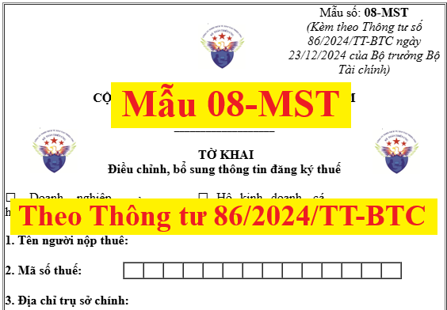

Mẫu 08-MST theo thông tư 86/2024/TT-BTC là tờ khai điều chỉnh, bổ sung thông tin đăng ký thuế mới nhất năm 2026.
CỘNG HÒA XÃ HỘI CHỦ NGHĨA VIỆT NAM Độc lập - Tự do - Hạnh phúc ___________________ TỜ KHAI Điều chỉnh, bổ sung thông tin đăng ký thuế
1. Tên người nộp thuế:
3. Địa chỉ trụ sở chính: 4. Thông tin đại lý thuế (nếu có): 4a. Tên:
Đăng ký bổ sung, thay đổi các chỉ tiêu đăng ký thuế như sau:
Người nộp thuế cam đoan những thông tin kê khai trên là hoàn toàn chính xác và chịu trách nhiệm trước pháp luật về những thông tin đã khai./.
Ghi chú: - Cột (1): Ghi tên các chỉ tiêu có thay đổi trên tờ khai đăng ký thuế hoặc các bảng kê kèm theo hồ sơ đăng ký thuế. - Cột (2): Ghi lại nội dung thông tin đăng ký thuế đã kê khai trong lần đăng ký thuế gần nhất. - Cột (3): Ghi chính xác nội dung thông tin đăng ký thuế mới thay đổi hoặc bổ sung. |
----------------------------------------------------------------------------
Các bạn muốn tải (download) Mẫu 08-MST theo thông tư 86/2024/TT-BTC mới nhất năm 2026 trên đây về để tham khảo và sử dụng thì có thể gửi mail về địa chỉ mail: ketoandieutam@gmail.com => Kế Toán Diệu Tâm sẽ gửi lại Mẫu 08-MST theo thông tư 86/2024/TT-BTC mới nhất năm 2026 này cho các bạn
----------------------------------------------------------------------------
==============================================

==============================================
Theo Thông tư 86/2024/TT-BTC hướng dẫn về đăng ký thuế ban hành Ngày 23/12/2024, có hiệu lực từ 01/7/2025 thì:
Mục 2. THAY ĐỔI THÔNG TIN ĐĂNG KÝ THUẾ
Điều 10. Địa điểm nộp và hồ sơ thay đổi thông tin đăng ký thuế
Địa điểm nộp và hồ sơ thay đổi thông tin đăng ký thuế đối với tổ chức thực hiện theo quy định tại Điều 36 Luật Quản lý thuế và các quy định sau:
1. Thay đổi thông tin đăng ký thuế nhưng không làm thay đổi cơ quan thuế quản lý trực tiếp
a) Người nộp thuế đăng ký thuế cùng với đăng ký doanh nghiệp, đăng ký hợp tác xã, đăng ký kinh doanh khi có thay đổi thông tin đăng ký thuế thì thực hiện thay đổi thông tin đăng ký thuế cùng với việc thay đổi nội dung đăng ký doanh nghiệp, đăng ký hợp tác xã, đăng ký kinh doanh.
b) Người nộp thuế theo quy định tại điểm a, b, c, d, đ, e, h, n khoản 2 Điều 4 Thông tư này nộp hồ sơ đến cơ quan thuế quản lý trực tiếp như sau:
b.1) Hồ sơ thay đổi thông tin đăng ký thuế của người nộp thuế theo quy định tại điểm a, b, c, đ, h, n khoản 2 Điều 4 Thông tư này, gồm:
- Tờ khai điều chỉnh, bổ sung thông tin đăng ký thuế mẫu 08-MST ban hành kèm theo Thông tư này;
- Bản sao Giấy phép thành lập và hoạt động, hoặc Giấy chứng nhận đăng ký hoạt động đơn vị phụ thuộc, hoặc Quyết định thành lập, hoặc Giấy phép tương đương do cơ quan có thẩm quyền cấp nếu thông tin trên các Giấy tờ này có thay đổi.
b.2) Hồ sơ thay đổi thông tin đăng ký thuế của người nộp thuế theo quy định tại điểm d khoản 2 Điều 4 Thông tư này, gồm: Tờ khai điều chỉnh, bổ sung thông tin đăng ký thuế mẫu 08-MST ban hành kèm theo Thông tư này.
b.3) Hồ sơ thay đổi thông tin đăng ký thuế của nhà cung cấp ở nước ngoài không có cơ sở thường trú tại Việt Nam quy định tại điểm e khoản 2 Điều 4 Thông tư này thực hiện theo quy định tại Điều 76 Thông tư số 80/2021/TT-BTC.
c) Người nộp thuế là nhà thầu, nhà đầu tư tham gia hợp đồng dầu khí quy định tại điểm h khoản 2 Điều 4 Thông tư này khi chuyển nhượng phần vốn góp trong tổ chức kinh tế hoặc chuyển nhượng một phần quyền lợi tham gia hợp đồng dầu khí, nộp hồ sơ thay đổi thông tin đăng ký thuế tại Cục Thuế nơi người điều hành đặt trụ sở hoặc tại Cục Thuế doanh nghiệp lớn trong trường hợp người điều hành được phân công cho Cục Thuế doanh nghiệp lớn quản lý.
Hồ sơ thay đổi thông tin đăng ký thuế, gồm: Tờ khai điều chỉnh, bổ sung thông tin đăng ký thuế mẫu 08-MST ban hành kèm theo Thông tư này.
2. Thay đổi thông tin đăng ký thuế làm thay đổi cơ quan thuế quản lý trực tiếp
a) Người nộp thuế đăng ký thuế cùng với đăng ký doanh nghiệp, đăng ký hợp tác xã, đăng ký kinh doanh khi có thay đổi địa chỉ trụ sở sang tỉnh, phố trực thuộc Trung ương khác hoặc thay đổi địa chỉ trụ sở sang địa bàn cấp huyện khác nhưng cùng địa bàn tỉnh, phố trực thuộc Trung ương làm thay đổi cơ quan thuế quản lý trực tiếp:
a.1) Người nộp thuế nộp hồ sơ thay đổi cho cơ quan thuế quản lý trực tiếp (cơ quan thuế nơi chuyển đi) để thực hiện các thủ tục về thuế trước khi đăng ký thay đổi địa chỉ trụ sở đến cơ quan đăng ký kinh doanh.
Hồ sơ nộp tại cơ quan thuế nơi chuyển đi, gồm: Tờ khai điều chỉnh, bổ sung thông tin đăng ký thuế mẫu số 08-MST ban hành kèm theo Thông tư này.
a.2) Sau khi nhận được Thông báo về việc người nộp thuế chuyển địa điểm mẫu số 09-MST ban hành kèm theo Thông tư này của cơ quan thuế nơi chuyển đi, người nộp thuế thực hiện đăng ký thay đổi địa chỉ trụ sở tại cơ quan đăng ký kinh doanh theo quy định của pháp luật về đăng ký doanh nghiệp, đăng ký hợp tác xã, đăng ký kinh doanh.
b) Người nộp thuế thuộc diện đăng ký thuế trực tiếp với cơ quan thuế theo quy định tại điểm a, b, c, d, đ, h, n khoản 2 Điều 4 Thông tư này khi có thay đổi địa chỉ trụ sở sang tỉnh, phố trực thuộc Trung ương khác hoặc thay đổi địa chỉ trụ sở sang địa bàn cấp huyện khác nhưng cùng địa bàn tỉnh, phố trực thuộc Trung ương làm thay đổi cơ quan thuế quản lý trực tiếp thực hiện như sau:
b.1) Tại cơ quan thuế nơi chuyển đi
Người nộp thuế nộp hồ sơ thay đổi thông tin đăng ký thuế cho cơ quan thuế quản lý trực tiếp (cơ quan thuế nơi chuyển đi). Hồ sơ thay đổi thông tin đăng ký thuế cụ thể như sau:
- Đối với người nộp thuế theo quy định tại điểm a, b, c, đ, h, n khoản 2 Điều 4 Thông tư này, gồm:
+ Tờ khai điều chỉnh, bổ sung thông tin đăng ký thuế mẫu số 08-MST ban hành kèm theo Thông tư này;
+ Bản sao Giấy phép thành lập và hoạt động, hoặc Văn bản tương đương do cơ quan có thẩm quyền cấp trong trường hợp địa chỉ trên các Giấy tờ này có thay đổi.
- Đối với người nộp thuế theo quy định tại điểm d khoản 2 Điều 4 Thông tư này, gồm: Tờ khai điều chỉnh, bổ sung thông tin đăng ký thuế mẫu số 08-MST ban hành kèm theo Thông tư này.
b.2) Tại cơ quan thuế nơi chuyển đến
b.2.1) Người nộp thuế nộp hồ sơ thay đổi thông tin đăng ký thuế tại cơ quan thuế nơi chuyển đến trong thời hạn 10 (mười) ngày làm việc kể từ ngày cơ quan thuế nơi chuyển đi ban hành Thông báo về việc người nộp thuế chuyển địa điểm mẫu số 09-MST ban hành kèm theo Thông tư này. Cụ thể:
- Người nộp thuế theo quy định tại điểm a, b, d, đ, h khoản 2 Điều 4 Thông tư này (trừ tổ hợp tác) nộp hồ sơ tại Cục Thuế nơi đặt trụ sở mới.
- Người nộp thuế là tổ hợp tác theo quy định tại điểm b khoản 2 Điều 4 Thông tư này nộp hồ sơ tại Chi cục Thuế, Chi cục Thuế khu vực nơi đặt trụ sở mới.
- Người nộp thuế theo quy định tại điểm c, n khoản 2 Điều 4 Thông tư này nộp hồ sơ tại Cục Thuế nơi người nộp thuế đóng trụ sở (tổ chức do cơ quan trung ương và cơ quan cấp tỉnh ra quyết định thành lập); tại Chi cục Thuế, Chi cục Thuế khu vực nơi tổ chức đóng trụ sở (tổ chức do cơ quan cấp huyện ra quyết định thành lập).
b.2.2) Hồ sơ thay đổi thông tin đăng ký thuế, gồm:
- Văn bản đăng ký chuyển địa điểm tại cơ quan thuế nơi người nộp thuế chuyển đến mẫu số 30/ĐK-TCT ban hành kèm theo Thông tư này.
- Bản sao Giấy phép thành lập và hoạt động, hoặc Văn bản tương đương do cơ quan có thẩm quyền cấp trong trường hợp địa chỉ trên các Giấy tờ này có thay đổi.
|
Khoản này được sửa đổi bởi Khoản 2 Điều 10 Thông tư 40/2025/TT-BTC có hiệu lực từ ngày 01/07/2025 như sau:
Điều 10. Sửa đổi, bổ sung một số điều của Thông tư số 86/2024/TT-BTC ngày 23 tháng 12 năm 2024 của Bộ trưởng Bộ Tài chính quy định về đăng ký thuế
...
2. Sửa đổi, bổ sung khoản 2 Điều 10 như sau:
“2. Thay đổi thông tin đăng ký thuế làm thay đổi cơ quan thuế quản lý trực tiếp
a) Người nộp thuế đăng ký thuế cùng với đăng ký doanh nghiệp, đăng ký hợp tác xã, đăng ký kinh doanh khi có thay đổi địa chỉ trụ sở làm thay đổi cơ quan thuế quản lý trực tiếp:
a.1) Người nộp thuế nộp hồ sơ thay đổi cho cơ quan thuế quản lý trực tiếp (cơ quan thuế nơi chuyển đi) để thực hiện các thủ tục về thuế trước khi đăng ký thay đổi địa chỉ trụ sở đến cơ quan đăng ký kinh doanh.
Hồ sơ nộp tại cơ quan thuế nơi chuyển đi, gồm: Tờ khai điều chỉnh, bổ sung thông tin đăng ký thuế mẫu số 08-MST ban hành kèm theo Thông tư này.
a.2) Sau khi nhận được Thông báo về việc người nộp thuế chuyển địa điểm mẫu số 09-MST ban hành kèm theo Thông tư này của cơ quan thuế nơi chuyển đi, người nộp thuế thực hiện đăng ký thay đổi địa chỉ trụ sở tại cơ quan đăng ký kinh doanh theo quy định của pháp luật về đăng ký doanh nghiệp, đăng ký hợp tác xã, đăng ký kinh doanh.
b) Người nộp thuế thuộc diện đăng ký thuế trực tiếp với cơ quan thuế theo quy định tại điểm a, b, c, d, đ, h, n khoản 2 Điều 4 Thông tư này khi có thay đổi địa chỉ trụ sở làm thay đổi cơ quan thuế quản lý trực tiếp thực hiện như sau:
b.1) Tại cơ quan thuế nơi chuyển đi
Người nộp thuế nộp hồ sơ thay đổi thông tin đăng ký thuế cho cơ quan thuế quản lý trực tiếp (cơ quan thuế nơi chuyển đi). Hồ sơ thay đổi thông tin đăng ký thuế cụ thể như sau:
- Đối với người nộp thuế theo quy định tại điểm a, b, c, đ, h, n khoản 2 Điều 4 Thông tư này, gồm:
+ Tờ khai điều chỉnh, bổ sung thông tin đăng ký thuế mẫu số 08-MST ban hành kèm theo Thông tư này;
+ Bản sao Giấy phép thành lập và hoạt động, hoặc Văn bản tương đương do cơ quan có thẩm quyền cấp trong trường hợp địa chỉ trên các Giấy tờ này có thay đổi.
- Đối với người nộp thuế theo quy định tại điểm d khoản 2 Điều 4 Thông tư này, gồm: Tờ khai điều chỉnh, bổ sung thông tin đăng ký thuế mẫu số 08-MST ban hành kèm theo Thông tư này.
b.2) Tại cơ quan thuế nơi chuyển đến
b.2.1) Người nộp thuế nộp hồ sơ thay đổi thông tin đăng ký thuế tại cơ quan thuế nơi chuyển đến trong thời hạn 10 (mười) ngày làm việc kể từ ngày cơ quan thuế nơi chuyển đi ban hành Thông báo về việc người nộp thuế chuyển địa điểm mẫu số 09-MST ban hành kèm theo Thông tư này. Cụ thể:
- Người nộp thuế theo quy định tại điểm a, b, d, đ, h khoản 2 Điều 4 Thông tư này (trừ tổ hợp tác) nộp hồ sơ tại Chi cục Thuế khu vực nơi đặt trụ sở mới.
- Người nộp thuế là tổ hợp tác theo quy định tại điểm b khoản 2 Điều 4 Thông tư này nộp hồ sơ tại Đội thuế thuộc Chi cục Thuế khu vực nơi đặt trụ sở mới.
- Người nộp thuế theo quy định tại điểm c, n khoản 2 Điều 4 Thông tư này nộp hồ sơ tại Chi cục Thuế khu vực nơi người nộp thuế đóng trụ sở (tổ chức do cơ quan trung ương và cơ quan cấp tỉnh ra quyết định thành lập); tại Đội thuế thuộc Chi cục Thuế khu vực nơi tổ chức đóng trụ sở (tổ chức không do cơ quan trung ương và cơ quan cấp tỉnh ra quyết định thành lập).
b.2.2) Hồ sơ thay đổi thông tin đăng ký thuế, gồm:
- Văn bản đăng ký chuyển địa điểm tại cơ quan thuế nơi người nộp thuế chuyển đến mẫu số 30/ĐK-TCT ban hành kèm theo Thông tư này.
- Bản sao Giấy phép thành lập và hoạt động, hoặc Văn bản tương đương do cơ quan có thẩm quyền cấp trong trường hợp địa chỉ trên các Giấy tờ này có thay đổi.”
|
Điều 11. Xử lý hồ sơ thay đổi thông tin đăng ký thuế và trả kết quả
Hồ sơ thay đổi thông tin đăng ký thuế được xử lý theo quy định tại Điều 41 Luật Quản lý thuế và các quy định sau:
1. Người nộp thuế thay đổi các thông tin đăng ký thuế theo quy định tại khoản 1 Điều 10 Thông tư này
a) Trường hợp thay đổi thông tin không có trên Giấy chứng nhận đăng ký thuế hoặc Thông báo mã số thuế:
Trong thời hạn 02 (hai) ngày làm việc kể từ ngày nhận đủ hồ sơ của người nộp thuế, cơ quan thuế quản lý trực tiếp người nộp thuế có trách nhiệm cập nhật các thông tin thay đổi vào Hệ thống ứng dụng đăng ký thuế.
b) Trường hợp thay đổi thông tin trên Giấy chứng nhận đăng ký thuế hoặc Thông báo mã số thuế:
Trong thời hạn 03 (ba) ngày làm việc kể từ ngày nhận đủ hồ sơ của người nộp thuế, cơ quan thuế quản lý trực tiếp có trách nhiệm cập nhật các thông tin thay đổi vào Hệ thống ứng dụng đăng ký thuế; đồng thời, ban hành Giấy chứng nhận đăng ký thuế hoặc Thông báo mã số thuế đã cập nhật thông tin thay đổi.
2. Người nộp thuế thay đổi thông tin đăng ký thuế theo quy định tại khoản 2 Điều 10 Thông tư này
a) Tại cơ quan thuế nơi chuyển đi:
Trong thời hạn 05 (năm) ngày làm việc kể từ ngày ký quyết định xử phạt vi phạm hành chính về thuế hoặc kết luận kiểm tra (đối với hồ sơ thuộc diện phải kiểm tra tại trụ sở người nộp thuế), 07 (bảy) ngày làm việc kể từ ngày tiếp nhận hồ sơ của người nộp thuế (đối với hồ sơ không thuộc diện phải kiểm tra tại trụ sở người nộp thuế), đồng thời người nộp thuế đã hoàn thành nghĩa vụ với cơ quan thuế nơi chuyển đi theo quy định tại khoản 3 Điều 6 Nghị định số 126/2020/NĐ-CP, cơ quan thuế ban hành Thông báo về việc người nộp thuế chuyển địa điểm mẫu số 09-MST ban hành kèm theo Thông tư này gửi cho người nộp thuế và cơ quan thuế nơi người nộp thuế chuyển đến.
Quá thời hạn nêu trên, trường hợp người nộp thuế chưa hoàn thành nghĩa vụ với cơ quan thuế nơi chuyển đi thì thời hạn cơ quan thuế nơi chuyển đi ban hành Thông báo về việc người nộp thuế chuyển địa điểm mẫu số 09-MST ban hành kèm theo Thông tư này được xác định lại là 03 (ba) ngày làm việc kể từ ngày người nộp thuế hoàn thành nghĩa vụ thuế với cơ quan thuế nơi chuyển đi.
Việc xác định người nộp thuế thuộc diện phải kiểm tra tại trụ sở người nộp thuế thực hiện theo quy định của pháp luật về quản lý thuế.
Người nộp thuế chuyển địa điểm hoạt động kinh doanh tại trụ sở chính, nếu tiếp tục có hoạt động kinh doanh khác địa bàn cấp tỉnh với địa bàn nơi đóng trụ sở chính và có nghĩa vụ khai thuế, nộp thuế với cơ quan thuế quản lý trên địa bàn cấp tỉnh đó theo quy định của pháp luật quản lý thuế (cơ quan thuế quản lý khoản thu) thì không phải thực hiện chuyển nghĩa vụ thuế theo quy định tại điểm này.
b) Tại cơ quan thuế nơi chuyển đến:
Trong thời hạn 03 (ba) ngày làm việc kể từ ngày nhận đủ hồ sơ của người nộp thuế, cơ quan thuế tiếp nhận hồ sơ có trách nhiệm cập nhật các thông tin thay đổi vào Hệ thống ứng dụng đăng ký thuế, ban hành Giấy chứng nhận đăng ký thuế hoặc Thông báo mã số thuế đã cập nhật thông tin thay đổi gửi cho người nộp thuế.
3. Xử lý đối với người nộp thuế đã hoàn thành chuyển địa điểm tại cơ quan thuế nơi chuyển đi nhưng không nộp hồ sơ thay đổi địa chỉ trụ sở tại cơ quan đăng ký kinh doanh (đối với người nộp thuế đăng ký thuế cùng với đăng ký doanh nghiệp, đăng ký hợp tác xã, đăng ký kinh doanh) hoặc tại cơ quan thuế nơi chuyển đến (đối với người nộp thuế đăng ký thuế trực tiếp với cơ quan thuế)
a) Trong thời hạn 10 (mười) ngày làm việc kể từ ngày cơ quan thuế nơi chuyển đi ban hành Thông báo về việc người nộp thuế chuyển địa điểm mẫu số 09-MST ban hành kèm theo Thông tư này, nếu người nộp thuế không thực hiện chuyển địa điểm thì phải có Văn bản đăng ký hủy chuyển địa điểm mẫu số 31/ĐK-TCT ban hành kèm theo Thông tư này gửi cơ quan thuế nơi chuyển đi. Cơ quan thuế nơi chuyển đi ban hành Thông báo về việc xác nhận người nộp thuế hủy chuyển địa điểm mẫu số 36/TB-ĐKT ban hành kèm theo Thông tư này, gửi người nộp thuế trong thời hạn 03 (ba) ngày làm việc kể từ ngày nhận được văn bản đề nghị của người nộp thuế.
b) Sau 10 (mười) ngày làm việc kể từ ngày cơ quan thuế nơi chuyển đi ban hành Thông báo về việc người nộp thuế chuyển địa điểm mẫu số 09-MST ban hành kèm theo Thông tư này, nếu người nộp thuế không nộp hồ sơ cho cơ quan đăng ký kinh doanh, hoặc đã nộp hồ sơ cho cơ quan đăng ký kinh doanh nhưng hồ sơ không được chấp thuận, hoặc không nộp hồ sơ cho cơ quan thuế nơi chuyển đến, và người nộp thuế không có văn bản đề nghị hủy chuyển địa điểm theo quy định tại điểm a khoản này gửi cơ quan thuế nơi chuyển đi thì cơ quan thuế nơi chuyển đến ban hành Thông báo giải trình, bổ sung thông tin tài liệu mẫu số 01/TB-BSTT-NNT tại Phụ lục II ban hành kèm theo Nghị định số 126/2020/NĐ-CP gửi người nộp thuế, đồng thời gửi thông báo qua địa chỉ thư điện tử, số điện thoại của người đại diện theo pháp luật của người nộp thuế theo thông tin người nộp thuế đã đăng ký.
c) Sau 10 (mười) ngày làm việc kể từ ngày cơ quan thuế nơi chuyển đến ban hành Thông báo theo quy định tại điểm b khoản này gửi người nộp thuế mà người nộp thuế không nộp Văn bản đăng ký hủy chuyển địa điểm mẫu số 31/ĐK-TCT ban hành kèm theo Thông tư này hoặc không nộp hồ sơ thay đổi địa chỉ trụ sở, không giải trình hoặc giải trình nhưng không được cơ quan thuế chấp thuận, cơ quan thuế nơi chuyển đến thực hiện xác minh thực tế hoạt động của người nộp thuế tại địa chỉ đã đăng ký chuyển đến.
c.1) Trường hợp kết quả xác minh người nộp thuế có hoạt động tại địa chỉ đã đăng ký chuyển đến, cơ quan thuế nơi chuyển đến yêu cầu người nộp thuế phải ký xác nhận vào Biên bản xác minh tình trạng hoạt động của người nộp thuế tại địa chỉ đã đăng ký mẫu số 15/BB-XMHĐ ban hành kèm theo Thông tư này, đồng thời yêu cầu người nộp thuế nộp hồ sơ thay đổi địa chỉ trụ sở với cơ quan đăng ký kinh doanh hoặc cơ quan thuế nơi chuyển đến theo quy định.
c.2) Trường hợp kết quả xác minh người nộp thuế không hoạt động tại địa chỉ đã đăng ký chuyển đến, cơ quan thuế nơi chuyển đến phối hợp với chính quyền địa phương (Ủy ban nhân dân cấp xã, cơ quan công an quản lý địa bàn) lập Biên bản xác minh tình trạng hoạt động của người nộp thuế tại địa chỉ đã đăng ký mẫu số 15/BB-XMHĐ ban hành kèm theo Thông tư này, gửi biên bản xác minh cho cơ quan thuế nơi chuyển đi ngay trong ngày làm việc hoặc chậm nhất vào đầu giờ ngày làm việc tiếp theo kể từ ngày ký biên bản. Cơ quan thuế nơi chuyển đi căn cứ biên bản xác minh của cơ quan thuế nơi chuyển đến thực hiện ban hành Thông báo về việc người nộp thuế không hoạt động tại địa chỉ đã đăng ký mẫu số 16/TB-ĐKT ban hành kèm theo Thông tư này, cập nhật trạng thái mã số thuế và công khai thông tin theo quy định tại điểm b khoản 2 Điều 17 Thông tư này.